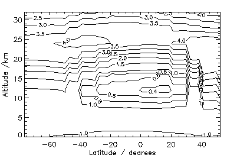
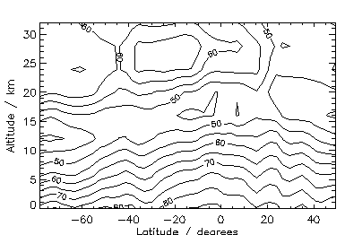
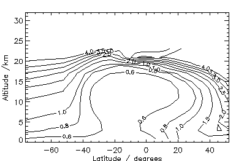
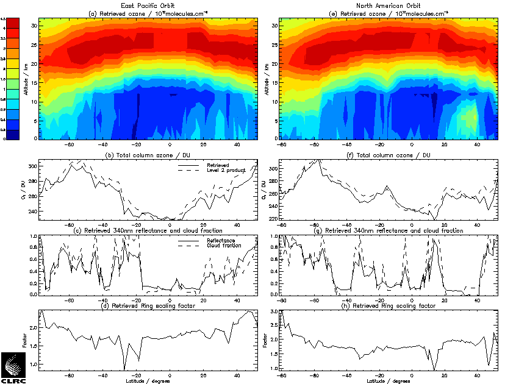
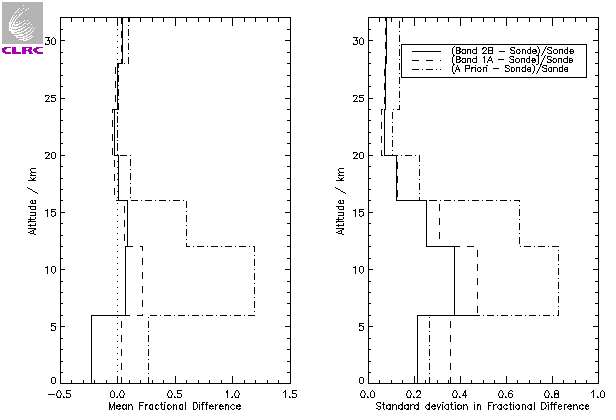

| Richard Siddans, William J. Reburn, Brian J. Kerridge, Rosemary Munro | Rutherford Appleton Laboratory, Chilton, Didcot, Oxfordshire OX11 06X, U.K. e-mail: R.Siddans@rl.ac.uk url: http://www.rl.ac.uk |
|
The Global Ozone Monitoring Experiment (GOME) was launched on ESA's ERS-2 satellite in April 1995. GOME is a downward-viewing spectrometer which measures backscattered solar radiation in the wavelength range 237-790nm at moderate spectral resolution (0.2-0.4nm). Measurements of backscattered UV radiation made by the series of TOMS and SBUV instruments have provided ozone column and profile data for nearly two decades. Since GOME measures the UV spectrum contiguously and with higher resolution, it should, in principle, yield height-resolved ozone data of higher quality, as well as total column measurements of additional constituents such as NO2 and BrO. Instruments of a similar class to GOME are planned for launch on ESA's ENVISAT in 1999 and the METOP series commencing in 2002. The performance of GOME therefore has implications for monitoring the global ozone distribution from space well beyond the ERS-2 mission.
A zonal-mean cross-section of stratospheric ozone retrieved from GOME Band 1A measurements on 11th January 1996 has previously been compared to those derived from SSBUV and MLS measurements and found to agree generally to within 10% [Munro]. Good agreement has also been demonstrated previously in comparisons between individual Band 2B retrievals for cloud-free scenes and co-located, mid-latitude ozonesonde profiles [Munro]. In this paper, preliminary Band 2B retrievals are presented for a more comprehensive range of observing conditions and cloud contamination, as sampled in two complete orbits on 11th January 1996.
Retrieval of ozone profiles from backscattered UV spectra is an under-constrained problem. However, by combining measurement information with that from an a priori profile, the Optimal Estimation (OE) [Rodgers] retrieval method allows a sufficient constraint to be applied, while retaining flexibility in profile representation. a priori ozone profiles and uncertainties used by the OE retrieval scheme were selected for the most appropriate latitude and month from a zonal-mean climatology derived from SAGE II.
This study used as its primary input GOME Level-1 Products. These contain measured, backscattered spectra which have been calibrated radiometrically and in wavelength. They also contain measurements of direct-sun spectra acquired in-flight via a diffuser. The measured quantity used by the retrieval scheme was in fact the ratio of backscattered (radiance) to direct-sun (irradiance) spectra, referred to here as reflectance.
To synthesise reflectance spectra, the GOMETRAN radiative transfer model [Rozanov] was interfaced to the retrieval scheme. This model has a wavelength resolution appropriate to GOME and incorporates gaseous absorption, surface reflection and scattering by air molecules, aerosol and cloud. Multiple scattering is accounted for by the method of finite differences. In this study, a fixed, single profile was adopted for aerosol scattering and cloud has been neglected.
The GOME wavelength range is divided into a number of Bands, of which only Bands 1A and 2B, covering the ranges 237-307nm and 312-405nm, respectively, were used in this study. Measurement integration times are 12s for Band 1A and 0.375s for Band 2B, hence the scene viewed by the latter is only a small fraction of that viewed by the former. For the swath-width used on the day in question, integration was over a scene of dimensions ~960km (across-track) by ~80-120km (along-track) for Band 1A and 80km (across-track) by 40km (along-track) for Band 2B. Furthermore, the properties of O3 absorption differ substantially between the two Bands. In Band 1A, O3 opacity is large and decreases monotonically with increasing wavelength from the peak of the Hartley band at 254nm; in Band 2B, it is relatively small and has a complicated, temperature-dependent wavelength variation in the Huggins bands below 340nm. Because of these important differences in viewing geometry and O3 absorption properties, a two-step approach was adopted for Bands 1A and 2B.
In the first step, every fourth Band 1A pixel in two adjacent orbits crossing the E.Pacific and N.America on 11th January 1996 was processed. The a priori information on ozone (including its covariance) was taken from the SAGE II climatology for January (figure 1). In the troposphere, where SAGE II provides no information, volume mixing ratios corresponding to an approximately constant tropospheric concentration of 1e12 molecules/cm3, with 100% error were used. Before generating reflectance spectra, a wavelength-dependent correction factor was applied to the direct-sun spectrum in accordance with the SOLSTICE/GOME irradiance comparison [Peeters] (see note 1).

Figure 1. The a priori ozone distribution for January (1e12 molecules/cm3).
Retrieval levels were specified at 0, 6 and 12km and then at 4km intervals up to 80km. Wavelengths <260nm were omitted along with those most seriously affected by NO gamma band emission and Fraunhofer absorption. In addition to the O3 profile, it was necessary to retrieve in parallel: an effective surface reflectance; a scaling-factor and wavelength shift for the Ring cross-section; a wavelength shift with respect to the reference O3 absorption cross-section spectrum and a wavelength-independent dark-current signal offset. Viewing geometry was taken from the Level-1 Product and the most appropriate temperature profile for each ground-pixel was extracted from the UK Met. Office analysis for the day. To represent the scan-angle dependence of the instrument's polarisation response adequately, it was necessary to calculate spectra for at least three angles, interpolate and integrate with respect to angle.
In the second step, the two centre (ie nadir) Band 2B pixels corresponding to each Band 1A pixel were processed , using the retrieved ozone profile and covariance matrix from Band 1A as a priori information (see note 2). As a pre-cursor to this, the effective surface reflectance in each Band 2B pixel was retrieved near 340nm, where atmospheric absorption by ozone and other gases is relatively small. A sub-set of wavelengths in the range 323.0-334.5nm was used for O3 retrievals from Band 2B. In order to maximize sensitivity to the spectral signature of temperature dependent O3 absorption in the Huggins bands (from which height-resolved information is gained) and to minimize sensitivity to scattering and reflecting media, ln(reflectance) was used as the measured quantity and a 2nd order polynomial subtracted from measured and calculated spectra before fitting.
Unwanted spectral structure is present in the measured reflectance spectrum due to NO2 absorption, the Ring effect, wavelength shifts between measurements of backscattered and direct-sun spectra and wavelength offsets with respect to the reference O3 absorption cross-section spectrum. To reduce RMS residuals between measured and calculated reflectance spectra to the level needed (<0.2%) to extract O3 information of good quality from the troposphere, it was necessary to account for NO2 using a single, fixed profile and to retrieve the other quantities jointly with O3.
The same two-step methodology was applied to process GOME data for comparison with the nineteen ozonesondes.
In figure 2, a height vs latitude cross-section is presented of the ratio of uncertainties in retrieved and a priori ozone profiles for the E.Pacific orbit. The fractional decrease indicates where and by how much GOME measurements have contributed new information. The largest decrease is around tropopause level (approx.16km at the equator) , and the decrease is significant right down to ground level, demonstrating that GOME measurements contain information on the distribution of tropospheric as well as stratospheric ozone (see note 3).

Figure 2. Ratio (times 100) of retrieved : a priori fractional error in ozone

The height vs latitude cross-section of retrieved ozone concentration for the E.Pacific orbit is presented in figure 4(a) and the orbital variation in column ozone obtained by integrating the retrieved profile (up to 40km) is compared to the operationally-derived GOME total column (Level-2 Product) in figure 4(b). Along-track variations in the integrated column are seen to closely follow those in the Level-2 Product and the integrated column is typically 4% lower than the Level-2 Product.Figure 3. 2-D model calculation of the zonally averaged ozone concentration field for January (1e12 molecules/cm3).
The 340nm reflectance retrieved by the RAL scheme is plotted in figure 4(c) together with the cloud-fraction derived in DLR operational processing. The scaling factor for the Ring cross-section retrieved for Band 2B by the RAL scheme is plotted in figure 4(d). Variations in retrieved 340nm reflectance are seen to be highly correlated with the operationally-derived cloud-fraction (see note 4) and anti-correlated with those in the Ring scaling factor (see note 5). The pixels most seriously contaminated by cloud (eg. those near 35N, 22N, 18S, 27S and 44S) are associated with anomalously low ozone columns and retrieved tropospheric concentrations, as might be anticipated.

The general morphology of the retrieved ozone height-latitude cross-section in figure 4(a) agrees broadly with that calculated by a zonally-averaged (2-D) chemical-transport model [Hough] (figure 3). There is a minimum in tropospheric ozone centred near 20S at ground level which moves equatorwards with increasing height to approx.10km. At middle and high southern latitudes, tropospheric concentrations increase with height and with latitude. The concentration of ozone in the lower troposphere tends to be larger in the northern hemisphere than at equivalent southern latitudes.Figure 4. Retrieval results from two orbits. Figures (a)-(d) relate to GOME orbit 60111200, entirely over the Pacific Ocean. Figures (e)-(h) relate to GOME orbit 60111182, over the USA north of 30N, then over the Pacific.
Comparison of the height-latitude cross-section retrieved for the E.Pacific orbit (figure 4(a)) with that retrieved over N.America (figure 4(e)) indicates broad agreement in the troposphere, except in the latitude range 30N-40N where ozone concentrations are clearly enhanced over southern California (approx. 1.5e12 cm-3 cf approx. 0.7e12 cm-3 at equivalent latitudes over the E.Pacific). We assume this enhancement to be due to local photochemical production of ozone. Cloud contamination in the pixels immediately north of 40N limits the horizontal extent of the enhanced region detected by GOME.
A second feature of interest in the N.American orbit is the local maximum in ozone at approx.15S which occurs in the stratosphere and propagates down to the tropopause (approx.15km) and below. The coherence of this feature and the absence of serious cloud-contamination suggests it to be a low-latitude intrusion of stratospheric air into the troposphere.
GOME retrievals have been compared to nineteen co-located ozonesonde profiles, acquired over Europe (including northern Scandinavia) between July 1995 and April 1996. The means and standard deviations of fractional differences in integrated sub-columns between retrieval levels are shown in figure 5 for: (i) A priori profiles (SAGE II January climatology); (ii) Band 1A retrieved profiles and (iii) Band 2B retrieved profiles. The Band 1A retrieved profiles have substantially smaller standard deviations and biasses than the a priori profiles (see note 6). For Band 2B retrieved profiles, standard deviations are <10% in 4km layers between 16 and 32km, approx.20% between 12 and 16km, approx.30% between 6 and 12km and approx.20% between 0 and 6km. Below 16km, these values are significantly lower than for Band 1A, indicating the benefit of Band 2B for retrievals in the troposphere and lower stratosphere. The Band 2B bias (<5%) in layers above 6km is also smaller than that for Band 1A. The bias of -25% in the 0-6km layer is probably due in part to cloud contamination in some scenes. (No attempt was made to select cloud-free Band 2B scenes for this intercomparison with ozonesondes.) Although limited in scope, this intercomparison does suggest that the combination of Band 1A and 2B measurements provides GOME with the capability to retrieve height-resolved ozone information of good quality in the troposphere as well as the stratosphere.

Figure 5. Intercomparison of Band 1A and 2B retrievals with nineteen sonde profiles.
The ``two-step'' scheme developed previously to retrieve ozone profiles spanning the troposphere and stratosphere from GOME Band 1A and 2B measurements has been applied to two orbits of data acquired on 11th January 1996. The general morphology of the retrieved ozone height-latitude cross-section in the troposphere for the E.Pacific orbit is in broad agreement with that calculated for the same time of year by a zonally-averaged (2-D) chemical-transport model. A large enhancement to tropospheric ozone over southern California is clearly evident in the retrieved cross-section for the consecutive orbit. Support for the major features seen in the two cross-sections comes from an intercomparison of GOME-retrieved profiles with nineteen co-located ozonesondes, from which the standard deviation in fractional difference was found to be <10% in the stratosphere and less than or equal to 30% in the troposphere, and the bias was found to be <5% above 6km and -25% below 6km (possibly due to cloud contamination).
From results presented in this paper, it can be concluded: (i) that the global distribution of ozone in the troposphere as well as the stratosphere could be retrieved from GOME measurements through large-scale processing of data and (ii) that the accuracy of retrieved global fields would benefit from high quality cloud information, such as that available from ATSR-2, flying alongside GOME on ERS-2.
1. Post-launch degradation was assumed to have occurred in the calibration unit and therefore to have only affected direct-sun spectra. This correction improves (by approx.10%) the agreement between GOME and other satellite sensors in the upper stratosphere, but has little impact on results presented here.
2. Prior to its use in generating the reflectance spectrum, the Band 2B direct-sun spectrum was used to improve absolute wavelength calibration and knowledge of the spectrometer slit-width. This was achieved by fitting segments of the measured spectrum in a piece-wise fashion to calculations which used a 0.01nm resolution solar reference [Chance].
3. The fractional reduction is smaller in the stratosphere because of the higher quality of a priori information available from the SAGE II climatology; uncertainty is typically 12% at the height of the peak ozone number density (approx.25km at the equator).
4. Absolute values of operationally-derived cloud-fraction can be up to a factor two too high (K.Chance, pri.comm.).
5. The Ring scaling factor is proportional to the number of N2 and O2 molecules in the optical path, which is suppressed when clouds are present, particularly at high altitude.
6. Except that the standard deviation for the 0-6km sub-column is smaller for the single, fixed a priori profile than for the Band 1A retrieved profiles.}.
This work was funded by the UK Natural Environment Research Council. Permission to use GOME data prior to its public release was granted by ESA and GOME Data Products were provided by DLR. The GOMETRAN radiative transfer model and the high resolution solar reference spectrum used in this study were supplied by Prof. J.Burrows (University of Bremen) and Dr. K.Chance (Harvard-Smithsonian Astrophysical Observatory), respectively. UK Met.Office temperature data was acquired through the BADC at RAL.